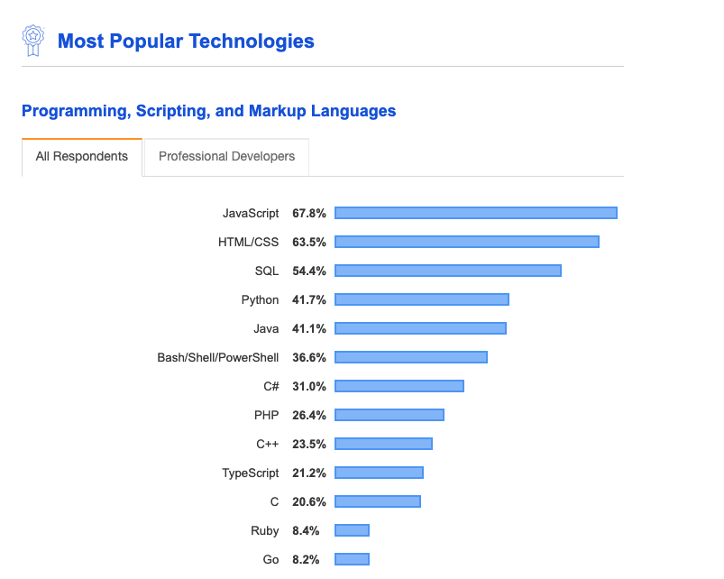
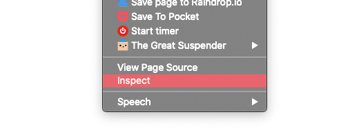
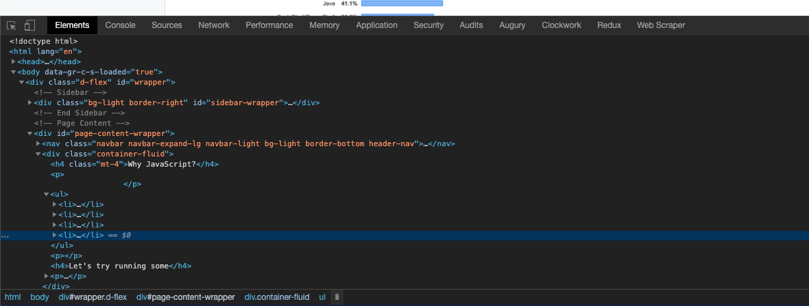

You can run it anywhere, you only need a web browser making it easy to get started.
JavaScript looks and feels very similar to other programming languages, once you have
learned a bit of JS you should be able to easily pick up another if needed e.g Python, PHP
or Ruby.
Althought primarly used to build the front-end (the user interfaces you seee) of websites
and web applications, JavaScript can also be used to build mobile applications (React
Native) or complex backend infrastructure (Node.js) making it extremely versatile to learn
as a first language.
JavaScript is now the most popular programming language in the world (based on the 2019
StackOverflow developer survey) meaning that developers are widely sought after and
support can easily be found online if you get stuck.

Let's try running some
Right click anywhere on this page and select "Inspect", it should be at the bottom of the list.

Alternativelty in Chrome you can press:
Mac: Command + Option +I
Windows: F12 or Control + Shift + I
You should see something that looks like this:

Select the "Console" tab
Try typing on the following: alert("Hello World");